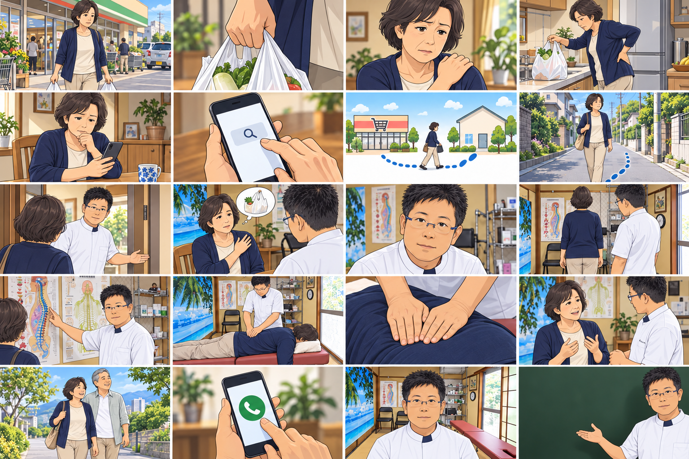
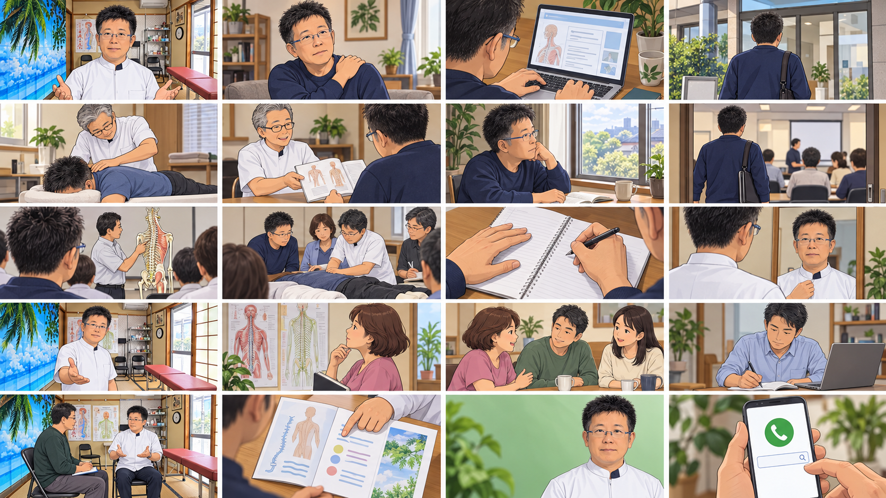

NORI / FILM 01 REVISION / V12 · 2026.10.12
この街の「近くにある」を、
来院する理由へ。
鈴木さんのフィードバックを反映。ハリナチュレの地域訴求を、にしの台の生活圏とNoriの手技に合わせて再設計しました。
今回の更新：1本目を「地域の呼びかけ→悩み→施術」へ改訂。
01はv12の台本・画像構成、02・03はv10のままです。構図確認用の生成画像です。街・店舗外観は仮イメージ。実在風景と最終動画用の高解像度素材は、別途制作します。
LOCAL CONTEXT / 知多市にしの台周辺
日常の買い物と暮らしに、相談先を結びつける。
にしの台を含む佐布里地区は、自然環境を残しながら宅地開発が進んできた地域です。地域カルテには、三世代交流や敬老会、スポーツ活動なども記載されています。広い地区の特徴と、院のすぐ近くの生活圏を分けて考えます。
にしの台 1・4区＋2・3区5,202人
2,410世帯
2026年9月1日現在。2行政区の合計。広告で届く人数ではありません。
知多市の人口資料 65歳以上の割合／2022年4月基準1・4区 34.6%
2・3区 30.9%
約3割が高齢層。ただし現在の割合や症状の有無を示す数字ではありません。
身近な地域の目印ヤマナカ
知多店
買い物先と院の位置関係を見せる。「駅近」だけでなく、日常の目印で伝える企画です。
公式店舗一覧 買い物の目印
ヤマナカ知多店
→
徒歩約2分・約140m
地図上の目安
肩・腰の相談先
Nori施術院
これは位置関係を示す図で、実際の道路形状ではありません。スーパーとの提携や駐車場共用を意味しません。
動画には、こう活かします
01：買い物先の近くに相談先がある利便性。02：荷物を持つ・家事をする・立ち上がるときの悩み。03：地域の高齢化から仕事需要を断定せず、先生の実体験と学びへの関心を中心にする。
「50〜70代の生活者が共感しやすいのでは」という制作仮説です。女性が多い地域・腰痛が多い地域・車でしか通えない地域、ということまでは、この資料から言えません。
地域性・年齢データの出典：知多市・佐布里地域カルテ（2023年1月公表）。自然や地域活動は佐布里地区全体の説明で、院の徒歩圏すべてに同じ特徴があるとの断定ではありません。
地域の来院へ2本。学びへの問い合わせへ1本。
01 / 60秒・20カット
にしの台・お近くにお住まいの方へ。
実写風AI／地域→悩み→施術
電話で初回予約 → 初回来院
02 / 60秒・20カット
その買い物帰りのつらさ、近くで相談しませんか。
アニメ／地域の日常・悩み先行
悩みを自分ごと化 → 電話相談・初回予約 → 初回来院
03 / 80秒・20カット
肩こりで通う側だった私が、学ぶ側へ。
アニメ／前田先生の実体験を軸にした学びの案内
学びについて問い合わせ → 個別説明の日程確定 → 説明への実参加
近さの具体的な根拠：ヤマナカ知多店から徒歩約2分・約140m。
Googleマップの徒歩経路で確認した目安です。駅徒歩の推測に置き換えず、スーパー・道順・院の入口をつなげます。実際の歩行経路と入口は現地確認します。
20カットは20個のメッセージではありません。同じテロップを複数カットで保持し、全体・手元・表情を切り替えます。配信用15秒・30秒の短縮案も末尾に記載しています。
01 / 地域・悩み・メリット・施術 / V12
ヤマナカ知多店のお近くにお住まいの方、必見。
1本目の改訂：5枚目の地図を削除。「地域の方、必見」→悩み→目指したい日常→施術・先生の説明→予約。60秒・20カット。施術を15秒から見せます。
流れ：身近なスーパーで呼びかけ → 肩・腰の悩み → 買い物や家事を軽やかに → 施術と説明 → 電話予約
最新台本 ／ 参考：ハリナチュレ広告 ／ 指定スーパー：ヤマナカ知多店
画像は構図用のAI絵コンテ。街・スーパーの外観は現地素材へ差し替えます。「すっきりしました」という実在客の体験談は未確認のため、目指したい日常と相談のメリットを伝えます。
AI絵コンテ・構図イメージ
画面に入れるテロップヤマナカ知多店のお近くにお住まいの方、必見。
読み上げ案ヤマナカ知多店のお近くにお住まいの方へ。
動作・編集店名が分かる実際の外観写真を冒頭に。地域名「知多市にしの台」も添える。
制作確認：ユーザー指定の地図で店名確認。現時点の画像は仮外観。最寄りとは断定しない。
01-02 · 03–06秒にしの台の暮らし・街並み
AI絵コンテ・構図イメージ
画面に入れるテロップ知多市にしの台・周辺にお住まいの方へ
動作・編集外観から生活者へ短くつなぐ。距離の図解や駅案内は入れない。
制作確認：街並みは構図用。実際の地域写真へ差し替える。
01-03 · 06–09秒買い物中、肩に手を添える女性
制作確認：架空の悩み再現。実在客の体験談ではない。
01-04 · 09–12秒椅子から立つときに腰を気にする
AI絵コンテ・構図イメージ
画面に入れるテロップ立ち上がるとき、腰が気になる。
制作確認：診断・原因を断定しない。
01-05 · 12–15秒目指したい日常・腕を自然に動かす女性
AI絵コンテ・構図イメージ
画面に入れるテロップ買い物も家事も、もっと軽やかに。
動作・編集地図の代わりに希望を見せる。画面に小さく「目指したい毎日」。ビフォーアフターにしない。
制作確認：目標の表現。改善済みの体験談や即効性の保証ではない。
01-06 · 15–18秒早めに見せる施術・全体像
AI絵コンテ・構図イメージ
画面に入れるテロップその肩・腰の悩み、近くで相談。
動作・編集先生が着衣の利用者の背部へ両手を当てる。院名を小さく先出し。
制作確認：掲載施術写真を参考。具体的手技は先生の実演に照合。
AI絵コンテ・構図イメージ
画面に入れるテロップヤマナカ知多店の近く｜Nori施術院
制作確認：スーパーとの提携・店内店舗という意味にしない。
制作確認：相談場面のイメージ。
01-09 · 24–27秒先生が体の仕組みを説明
動作・編集模型・院内の掲示を使う説明の実写。独立した解説図の画面は入れない。
制作確認：会議42:52〜43:29を参照。
動作・編集自然に立つ利用者と、姿勢・動きを確認する先生。
制作確認：一般的施術フローを参考。先生に実際の手順を照合。
01-11 · 30–33秒背部に触れる両手・寄り
動作・編集両手と前腕が見える寄り。ゆっくりした接触を見せる。
制作確認：施術の強さ・方向は実演で確定。
制作確認：急なひねりやボキボキ音を加えない。
動作・編集自然な表情。施術の雰囲気が分かる一瞬のカット。
制作確認：「すっきりしました」など未確認の感想を創作しない。
制作確認：対応の具体像を見せる場面。
01-15 · 42–45秒斜めからの手元・施術の続き
AI絵コンテ・構図イメージ
画面に入れるテロップ肩・腰のお悩みをご相談ください。
動作・編集手元に戻り、施術の様子をしっかり見せる。
制作確認：新しい未確認の技法を追加しない。
01-16 · 45–48秒施術後の状態を一緒に確認
制作確認：実在の改善体験談が得られた場合のみ、本人の言葉・条件とともに差し替え。
動作・編集先生と利用者の対面。近くで相談できるメリットへ戻る。
制作確認：架空の効果・体験談は入れない。
AI絵コンテ・構図イメージ
画面に入れるテロップNori施術院｜にしの台1丁目2814
制作確認：公開住所。
制作確認：予約導線を一本にする。
AI絵コンテ・構図イメージ
画面に入れるテロップご相談・ご予約｜090-3386-2986
動作・編集院名・番号・検索語を大きく。最後6秒は読みやすく保持。
制作確認：料金・受付時間は未確認のため追加しない。
通し読み台本
ヤマナカ知多店のお近くにお住まいの方へ。買い物中の肩こり。立ち上がるときの、腰の不調。毎日の動きを、もっと軽やかに。そのお悩み、近くで相談しませんか。Nori施術院の、前田です。まずは、気になることを伺います。骨盤や背骨を中心とした、カイロプラクティックです。手技で、体をケアしていきます。気になることは、施術中にも。施術後も、状態を一緒に確認します。身近な場所に、体の相談先を。Nori施術院へ。「肩や腰の相談をしたい」と、お気軽に、お電話ください。
02 / アニメ／地域の日常・悩み先行
その買い物帰りのつらさ、近くで相談しませんか。
対象：同じ生活圏で、買い物・家事の肩や腰のつらさを「いつものこと」とやり過ごしている方。主人公は60代女性。
流れ：見覚えのある街 → 生活中の悩み → 近くの相談先を発見 → 施術を理解 → 相談
60秒・20カット／テロップ・読み上げ・演出を指定
02の20場面を一覧画像で見る

左上から横に4コマずつ、全5段。タップで原寸画像。生成した構図確認用の絵コンテです。
ヤマナカ知多店周辺・アニメの引き
外観・経路は仮イメージ
この場面の絵コンテにしの台の、いつもの帰り道。スーパー・道路・入口は現地を再現した画像ではありません。実際の写真・確認した経路に置き換える場面です。
全20場面の画像を開く 画面のテロップにしの台の、いつもの帰り道。
読み上げ案にしの台の、いつもの帰り道。
動作・構図・編集実際の建物配置・道路を基準にした背景。主人公が買い物袋を持って出てくる。
根拠・制作確認：風景は現地写真から描き起こす。架空の街に店名だけ貼らない。
02-02 · 02–04秒買い物袋を持つ手・寄り
AI生成・構図イメージ
この場面の絵コンテその荷物、肩にきていませんか。この絵は構図・人物・動作を確認するための案です。完成動画用の素材ではありません。
全20場面の画像を開く 画面のテロップその荷物、肩にきていませんか。
読み上げ案買い物袋が、肩にこたえる。
動作・構図・編集指は5本、片手に一つの持ち手。重さで少し腕が下がる。
根拠・制作確認：日常の共感。左右の手・本数・持ち手の連続性を確認。
AI生成・構図イメージ
この場面の絵コンテその荷物、肩にきていませんか。〈継続〉この絵は構図・人物・動作を確認するための案です。完成動画用の素材ではありません。
全20場面の画像を開く 画面のテロップその荷物、肩にきていませんか。〈継続〉
読み上げ案―
動作・構図・編集短い息、肩を少し気にする。肩周辺に控えめな暖色線を付ける。
根拠・制作確認：アニメ独自の感覚表現。骨のずれや炎症の診断画像にしない。
02-04 · 06–09秒帰宅して袋を台へ置く・中景
AI生成・構図イメージ
この場面の絵コンテ腰まで、気になる。この絵は構図・人物・動作を確認するための案です。完成動画用の素材ではありません。
全20場面の画像を開く 画面のテロップ腰まで、気になる。
読み上げ案家に着いても、腰が気になる。
動作・構図・編集袋を持ち上げる途中で動作を止める。腰に片手、もう片手は台へ。
根拠・制作確認：肩→腰の悩みを別の日常動作で見せる。施術前後比較ではない。
AI生成・構図イメージ
この場面の絵コンテどこに相談したらいい？この絵は構図・人物・動作を確認するための案です。完成動画用の素材ではありません。
全20場面の画像を開く 画面のテロップどこに相談したらいい？
読み上げ案どこに相談したらいいんだろう。
動作・構図・編集スマートフォンを前に「どこに相談しよう」と考える。
根拠・制作確認：セリフは主人公の創作。実在患者の体験談ではない。
02-06 · 12–14秒画面内の地域名・視線の寄り
AI生成・構図イメージ
この場面の絵コンテにしの台に、Nori施術院。この絵は構図・人物・動作を確認するための案です。完成動画用の素材ではありません。
全20場面の画像を開く 画面のテロップにしの台に、Nori施術院。
読み上げ案にしの台に、Nori施術院。
動作・構図・編集「Nori施術院 知多市」の文字を編集で配置。架空の星評価・口コミは出さない。
根拠・制作確認：地元の相談先発見。
02-07 · 14–17秒ヤマナカと院の位置関係・俯瞰
外観・経路は仮イメージ
この場面の絵コンテヤマナカ知多店から約140mスーパー・道路・入口は現地を再現した画像ではありません。実際の写真・確認した経路に置き換える場面です。
全20場面の画像を開く 画面のテロップヤマナカ知多店から約140m
読み上げ案ヤマナカ知多店から、
動作・構図・編集実際の道路関係を保ったシンプルな案内図へ切替。院のピンを示す。
根拠・制作確認：地図上140m、徒歩約2分。北方向・曲がり角を確認して作図。
02-08 · 17–20秒街の同じ道を主人公が歩く
外観・経路は仮イメージ
この場面の絵コンテ徒歩約2分の場所に。スーパー・道路・入口は現地を再現した画像ではありません。実際の写真・確認した経路に置き換える場面です。
全20場面の画像を開く 画面のテロップ徒歩約2分の場所に。
読み上げ案地図上で徒歩およそ2分の場所です。
動作・構図・編集手描きの点線で経路を補助し、最後に先生の院の位置へ。
根拠・制作確認：小字で地図上の目安。スーパーの提携・共用駐車場は示さない。
外観・経路は仮イメージ
この場面の絵コンテまずは、相談してみよう。スーパー・道路・入口は現地を再現した画像ではありません。実際の写真・確認した経路に置き換える場面です。
全20場面の画像を開く 画面のテロップまずは、相談してみよう。
読み上げ案まずは、相談してみませんか。
動作・構図・編集玄関で前田先生が迎える。アニメでも実際の外観を優先。
根拠・制作確認：入口素材未取得。建物の生成で正確な道案内を装わない。
AI生成・構図イメージ
この場面の絵コンテ「買い物のあと、肩や腰が…」この絵は構図・人物・動作を確認するための案です。完成動画用の素材ではありません。
全20場面の画像を開く 画面のテロップ「買い物のあと、肩や腰が…」
読み上げ案「買い物のあと、肩や腰が気になって」
動作・構図・編集主人公が買い物中の肩・腰の悩みを話す。小さな回想窓で買い物袋を添える。
根拠・制作確認：会話は再現。アニメならではの回想で01との差を出す。
AI生成・構図イメージ
この場面の絵コンテ困っている場面を、お聞かせください。この絵は構図・人物・動作を確認するための案です。完成動画用の素材ではありません。
全20場面の画像を開く 画面のテロップ困っている場面を、お聞かせください。
読み上げ案困っている場面から、お話しください。
動作・構図・編集相づち。目線を主人公に合わせる。先生は提供写真の年齢感。
根拠・制作確認：顔・眼鏡をV7修正版に合わせる。
AI生成・構図イメージ
この場面の絵コンテ姿勢や動きを確認この絵は構図・人物・動作を確認するための案です。完成動画用の素材ではありません。
全20場面の画像を開く 画面のテロップ姿勢や動きを確認
読み上げ案姿勢や動きを確認して、
動作・構図・編集先生が横から姿勢を確認。肩と骨盤の位置の補助線を1本ずつ表示。
根拠・制作確認：一般手順を参考。AI診断や数値判定を加えない。
02-13 · 32–35秒先生が解剖図を示す・中景
AI生成・構図イメージ
この場面の絵コンテ骨盤・背骨を中心にこの絵は構図・人物・動作を確認するための案です。完成動画用の素材ではありません。
全20場面の画像を開く 画面のテロップ骨盤・背骨を中心に
読み上げ案骨盤や背骨を中心にケアします。
動作・構図・編集体の背面シルエットへ短く切替。骨盤と背骨に薄い色で注目を集める。
根拠・制作確認：骨がズレて治る断定図解は使わない。
AI生成・構図イメージ
この場面の絵コンテ手技によるケアこの絵は構図・人物・動作を確認するための案です。完成動画用の素材ではありません。
全20場面の画像を開く 動作・構図・編集伏臥位で先生が背部へ両手を当てる。実際の掲載写真の姿勢に合わせる。
根拠・制作確認：Nori掲載写真・会議43:55。施術イメージを小さく表示。
02-15 · 38–41秒施術の手元と主人公の表情
AI生成・構図イメージ
この場面の絵コンテ気になることも、話しながら。この絵は構図・人物・動作を確認するための案です。完成動画用の素材ではありません。
全20場面の画像を開く 画面のテロップ気になることも、話しながら。
読み上げ案気になることも、話しながら。
動作・構図・編集前腕まで含む手元から横顔へ。手は左右各1本、関節・指の破綻を確認。
根拠・制作確認：触れ方は先生に照合。症状が消える発光などは使わない。
02-16 · 41–44秒先生と主人公が体の状態を確認
AI生成・構図イメージ
この場面の絵コンテ体の状態を、一緒に確認。この絵は構図・人物・動作を確認するための案です。完成動画用の素材ではありません。
全20場面の画像を開く 画面のテロップ体の状態を、一緒に確認。
読み上げ案体の状態を、一緒に確認します。
動作・構図・編集主人公が動かしやすさなどを言葉で伝える場面。具体的な改善値は映さない。
根拠・制作確認：一般手順。実体験の「改善しました」は資料未確認のため未採用。
02-17 · 44–47秒主人公の希望する日常・別カット
AI生成・構図イメージ
この場面の絵コンテいつもの毎日を、大切にしたい。この絵は構図・人物・動作を確認するための案です。完成動画用の素材ではありません。
全20場面の画像を開く 画面のテロップいつもの毎日を、大切にしたい。
読み上げ案いつもの毎日を、大切にしたい。
動作・構図・編集家族と散歩する柔らかな色調のイメージ。前後比較ではなく希望として示す。
根拠・制作確認：画面内に「日常のイメージ」。施術効果の実証映像にはしない。
02-18 · 47–50秒視聴者への案内・電話の手元
AI生成・構図イメージ
この場面の絵コンテまずは、肩・腰のご相談から。この絵は構図・人物・動作を確認するための案です。完成動画用の素材ではありません。
全20場面の画像を開く 画面のテロップまずは、肩・腰のご相談から。
読み上げ案まずは、肩や腰のご相談から。
動作・構図・編集主人公の物語から予約案内へ切り替える。手元と電話アイコンにして、受診後に初回予約をする時系列に見せない。
根拠・制作確認：変化の着地点は「治った」ではなく「相談する一歩」。
02-19 · 50–52秒先生と地域名を並べた画面
AI生成・構図イメージ
この場面の絵コンテNori施術院｜知多市にしの台この絵は構図・人物・動作を確認するための案です。完成動画用の素材ではありません。
全20場面の画像を開く 画面のテロップNori施術院｜知多市にしの台
読み上げ案Nori施術院へ。
動作・構図・編集主人公から先生へ視線をつなぎ、院名を大きく置く。
根拠・制作確認：住所・電話は実店舗確認済み。
02-20 · 52–60秒アニメの先生＋電話CTA
AI生成・構図イメージ
この場面の絵コンテ090-3386-2986この絵は構図・人物・動作を確認するための案です。完成動画用の素材ではありません。
全20場面の画像を開く 画面のテロップ090-3386-2986
読み上げ案「肩や腰の相談をしたい」と、お電話ください。
動作・構図・編集01と同じ電話番号・住所位置。8秒静止して読む時間を確保。
根拠・制作確認：検索Nori施術院 知多市。広告の遷移先は予約情報へ。
通し読み台本
にしの台の、いつもの帰り道。買い物袋が、肩にこたえる。家に着いても、腰が気になる。どこに相談したらいいんだろう。にしの台に、Nori施術院。ヤマナカ知多店から、地図上で徒歩およそ2分の場所です。まずは、相談してみませんか。「買い物のあと、肩や腰が気になって」困っている場面から、お話しください。姿勢や動きを確認して、骨盤や背骨を中心にケアします。気になることも、話しながら。体の状態を、一緒に確認します。いつもの毎日を、大切にしたい。まずは、肩や腰のご相談から。Nori施術院へ。「肩や腰の相談をしたい」と、お電話ください。
03 / アニメ／前田先生の実体験を軸にした学びの案内
肩こりで通う側だった私が、学ぶ側へ。
対象：体のケアを学びたい方、将来の仕事や副業の選択肢を探す方。特に施術を受けた経験のある方。
流れ：現在の先生 → 肩こりで通院 → 声かけとセミナー → 学びが仕事へ → 視聴者の一歩
80秒・20カット／テロップ・読み上げ・演出を指定
03の20場面を一覧画像で見る

左上から横に4コマずつ、全5段。タップで原寸画像。生成した構図確認用の絵コンテです。
現在の前田先生・正面寄り
AI生成・構図イメージ
この場面の絵コンテ私も、受ける側でした。この絵は構図・人物・動作を確認するための案です。完成動画用の素材ではありません。
全20場面の画像を開く 画面のテロップ私も、受ける側でした。
読み上げ案私も、最初は施術を受ける側でした。
動作・構図・編集提供写真に合わせた先生が院内で語り始める。字幕は引用扱いでなく語り案。
根拠・制作確認：先生の語り案・本人確認前。会議28:12〜28:35。
AI生成・構図イメージ
この場面の絵コンテきっかけは、肩こり。会議内容をもとにした再現イメージです。当時の写真ではありません。
全20場面の画像を開く 画面のテロップきっかけは、肩こり。
読み上げ案きっかけは、肩こりです。
動作・構図・編集過去の場面へ色温度を少し落として切替。先生を別の若い人物にしない。
根拠・制作確認：会議35:15〜36:01。症状の期間や重症度は加えない。
03-03 · 06–10秒自宅で相談先を調べる手元
AI生成・構図イメージ
この場面の絵コンテ相談先を探す中で会議内容をもとにした再現イメージです。当時の写真ではありません。
全20場面の画像を開く 画面のテロップ相談先を探す中で
読み上げ案相談先を探す中で、
動作・構図・編集検索する先生。実在しない病院名や診断結果を出さない。
根拠・制作確認：会議35:20〜36:01。病院へ通っても治らなかった話にはしない。
03-04 · 10–14秒初めて施術院へ向かう過去の先生
AI生成・構図イメージ
この場面の絵コンテカイロプラクティックと出会う。会議内容をもとにした再現イメージです。当時の写真ではありません。
全20場面の画像を開く 画面のテロップカイロプラクティックと出会う。
読み上げ案カイロプラクティックに出会いました。
動作・構図・編集再現用の一般的な入口。現在のNori院への来院と誤認させない。
根拠・制作確認：出会った施術院は再現イメージ。会議35:20〜36:01。
03-05 · 14–18秒施術を受ける過去の先生
AI生成・構図イメージ
この場面の絵コンテ通う中で、知った技術。会議内容をもとにした再現イメージです。当時の写真ではありません。
全20場面の画像を開く 画面のテロップ通う中で、知った技術。
読み上げ案施術を受けて、通うようになりました。
動作・構図・編集受け手としてベッドに横になる先生。担当施術者は架空の別人。
根拠・制作確認：会議28:35。肩こりが完治した描写は記録にない。
AI生成・構図イメージ
この場面の絵コンテ先生から、学びの勧め。会議内容をもとにした再現イメージです。当時の写真ではありません。
全20場面の画像を開く 画面のテロップ先生から、学びの勧め。
読み上げ案通っていた先生から、学びを勧められました。
動作・構図・編集先輩の先生が学びの資料を見せる。セリフの直接引用はしない。
根拠・制作確認：会議28:35。「やった方がいいよ」という内容を要約。
03-07 · 22–26秒将来を考える先生・窓辺
AI生成・構図イメージ
この場面の絵コンテこれからの働き方を考えて。会議内容をもとにした再現イメージです。当時の写真ではありません。
全20場面の画像を開く 画面のテロップこれからの働き方を考えて。
読み上げ案定年後の収入のことも、考えていました。
動作・構図・編集カレンダーとノート。妻や家族の発言は創作して本人証言に混ぜない。
根拠・制作確認：会議28:35。個人的な金額や非公開の職場事情は不要。
03-08 · 26–30秒セミナー会場に入る・足元から引き
AI生成・構図イメージ
この場面の絵コンテまずは、セミナーへ。会議内容をもとにした再現イメージです。当時の写真ではありません。
全20場面の画像を開く 画面のテロップまずは、セミナーへ。
読み上げ案そこで、セミナーに参加し始めました。
動作・構図・編集受付資料を受け取り、学ぶ側の一歩を描く。会場にNoriの看板は付けない。
根拠・制作確認：会議28:35／37:13〜38:16。Noriが全課程を開催する表現にしない。
AI生成・構図イメージ
この場面の絵コンテからだの仕組みを学ぶ。会議内容をもとにした再現イメージです。当時の写真ではありません。
全20場面の画像を開く 画面のテロップからだの仕組みを学ぶ。
読み上げ案体の仕組みや、
動作・構図・編集講師と骨格模型を見つめる先生。体の構造を学ぶ内容のイメージ。
根拠・制作確認：全健会セミナーの一般内容。具体的な受講風景は再現。
AI生成・構図イメージ
この場面の絵コンテ手技を学ぶ。会議内容をもとにした再現イメージです。当時の写真ではありません。
全20場面の画像を開く 画面のテロップ手技を学ぶ。
読み上げ案手技を学んでいく。
動作・構図・編集成人受講者2〜3名。講師の動作を見て、先生がうなずく。
根拠・制作確認：公式セミナーの内容を参考。資格認定そのものを描かない。
03-11 · 38–42秒右手でメモ、左手でノート固定
AI生成・構図イメージ
この場面の絵コンテ一つずつ、積み重ねる。会議内容をもとにした再現イメージです。当時の写真ではありません。
全20場面の画像を開く 画面のテロップ一つずつ、積み重ねる。
読み上げ案学びを、一つずつ積み重ねました。
動作・構図・編集手元を斜め上から。右手のペンと左手の位置を一枚ずつ検品。
根拠・制作確認：受講事実の範囲の語り案。架空の合格証や期間の断定を入れない。
03-12 · 42–46秒私服から白い制服の現在へ
AI生成・構図イメージ
この場面の絵コンテそして、仕事という選択へ。この絵は構図・人物・動作を確認するための案です。完成動画用の素材ではありません。
全20場面の画像を開く 画面のテロップそして、仕事という選択へ。
読み上げ案そして今、施術を仕事にしています。
動作・構図・編集同じ顔・同じ構図で現在へ。老若の差を大きく付けない。
根拠・制作確認：会議38:16／開院投稿2026年9月。収入実績は示さない。
03-13 · 46–50秒現在のNori院・先生が迎える
AI生成・構図イメージ
この場面の絵コンテNori施術院 前田 宗紀この絵は構図・人物・動作を確認するための案です。完成動画用の素材ではありません。
全20場面の画像を開く 画面のテロップNori施術院 前田 宗紀
読み上げ案Nori施術院の、前田です。
動作・構図・編集実際の院内と成熟した先生。店名を明確に。
根拠・制作確認：提供写真・Googleマップ。
03-14 · 50–54秒解剖図を見て考える成人・別人物
AI生成・構図イメージ
この場面の絵コンテ自分のからだを、もっと知りたい。この絵は構図・人物・動作を確認するための案です。完成動画用の素材ではありません。
全20場面の画像を開く 画面のテロップ自分のからだを、もっと知りたい。
読み上げ案自分の体のことを、もっと知りたい方。
動作・構図・編集ここから視聴者への案内。先生の過去再現を終え、字幕色で区別。
根拠・制作確認：会議25:22の参加理由の例。先生本人の入門動機とは書かない。
03-15 · 54–58秒家族の話を聞く成人・家庭
AI生成・構図イメージ
この場面の絵コンテ家族の健康に、関心がある。この絵は構図・人物・動作を確認するための案です。完成動画用の素材ではありません。
全20場面の画像を開く 画面のテロップ家族の健康に、関心がある。
読み上げ案家族の健康に、関心がある方。
動作・構図・編集二人が座って体調を気遣う会話。家族への施術や治療の保証は描かない。
根拠・制作確認：会議25:22。家族の症状改善や医療費削減は断定しない。
03-16 · 58–62秒仕事のノートを開く成人
AI生成・構図イメージ
この場面の絵コンテ副業や、これからの仕事に。この絵は構図・人物・動作を確認するための案です。完成動画用の素材ではありません。
全20場面の画像を開く 画面のテロップ副業や、これからの仕事に。
読み上げ案副業や、これからの仕事を考える方にも。
動作・構図・編集「これからの仕事」「学ぶこと」の2項目。売上・利益のグラフは出さない。
根拠・制作確認：会議22:47〜25:22。資格・就業・収入の保証はしない。
03-17 · 62–66秒先生と相談者・対面の全景
AI生成・構図イメージ
この場面の絵コンテまずは、話を聞くところから。この絵は構図・人物・動作を確認するための案です。完成動画用の素材ではありません。
全20場面の画像を開く 画面のテロップまずは、話を聞くところから。
読み上げ案まずは、私に話を聞きに来ませんか。
動作・構図・編集相談者が質問し、先生が資料を示す。高解像度の単独画像で制作。
根拠・制作確認：会議23:23〜26:43。本人は学び先を紹介する役割。
03-18 · 66–70秒学び方を説明する資料の手元
AI生成・構図イメージ
この場面の絵コンテ学び方・費用・日程をご相談この絵は構図・人物・動作を確認するための案です。完成動画用の素材ではありません。
全20場面の画像を開く 画面のテロップ学び方・費用・日程をご相談
読み上げ案学び方や参加先について、ご案内します。
動作・構図・編集学ぶ内容・会場・費用・日程の見出しだけを表示。未確定の数字を作らない。
根拠・制作確認：会議24:18〜26:43。説明会の確定日時・会場はまだ未確認。
AI生成・構図イメージ
この場面の絵コンテ一生使える技術で、新しい仕事に挑戦。この絵は構図・人物・動作を確認するための案です。完成動画用の素材ではありません。
全20場面の画像を開く 画面のテロップ一生使える技術で、新しい仕事に挑戦。
読み上げ案カイロプラクティックを、学んでみませんか。
動作・構図・編集先生の年齢感を顔写真2・3で照合。検索語を編集で正確に重ねる。
根拠・制作確認：ユーザー採用済みのCTA方向。保証文ではなく学びへの呼びかけ。
03-20 · 74–80秒同じCTA内の電話番号を強調
AI生成・構図イメージ
この場面の絵コンテ「カイロの説明を聞きたい」とお電話ください。この絵は構図・人物・動作を確認するための案です。完成動画用の素材ではありません。
全20場面の画像を開く 画面のテロップ「カイロの説明を聞きたい」とお電話ください。
読み上げ案「カイロの説明を聞きたい」と、お電話ください。
動作・構図・編集19から検索窓を保持し、電話番号と問い合わせ文を追加。合計10秒のCTA。
根拠・制作確認：090-3386-2986／Nori施術院 知多市。19→20は読みやすさのため意図的にCTAを保持。
通し読み台本
私も、最初は施術を受ける側でした。きっかけは、肩こりです。相談先を探す中で、カイロプラクティックに出会いました。施術を受けて、通うようになりました。通っていた先生から、学びを勧められました。定年後の収入のことも、考えていました。そこで、セミナーに参加し始めました。体の仕組みや、手技を学んでいく。学びを、一つずつ積み重ねました。そして今、施術を仕事にしています。Nori施術院の、前田です。自分の体のことを、もっと知りたい方。家族の健康に、関心がある方。副業や、これからの仕事を考える方にも。まずは、私に話を聞きに来ませんか。学び方や参加先について、ご案内します。カイロプラクティックを、学んでみませんか。「カイロの説明を聞きたい」と、お電話ください。
参考広告・地域調査 v9
確認日：2026-10-12。広告の確認事実、地域の公開資料、今回の制作上の提案を分けて記載します。
1. ハリナチュレ：今回の主要参考
鈴木さんから提示されたMeta広告ライブラリで、実際に配信中の広告を確認しました。表示順や配信期間だけでは、予約数・広告費・獲得単価・集客成果は分かりません。「伸びているから売れる」とは判断せず、地域と施術を伝える構成を採用します。
31秒版はブラウザで冒頭・施術中・後半の映像を確認。秒単位の全カット採譜や音声の完全な書き起こしはしていません。01・02の台本はこの広告の逐語的な模写ではなく、Noriのサービスに合わせた新規案です。広告の予約実績は未確認です。
補助資料：ハリナチュレ運営者による15秒広告の解説。メリット・共感・サービス・信頼・申込みへの整理を参考にします。事業成果の記述は運営者の自己申告であり、この個別広告の成果ではありません。
台本への対応
- 01 実写風： v12は0–6秒でスーパーと地域への呼びかけ、6–12秒で肩・腰の悩み、12–15秒で目指したい日常。15秒から施術を先出しし、先生の紹介・説明・施術・状態確認を経て52–60秒で電話のCTA。5枚目の地図は削除。
- 02 アニメ： 冒頭から実在するスーパー周辺。袋を持つ手→肩→帰宅して腰、の動作で悩みを想起。検索と経路の線、相談中の小さな回想を使い、アニメにする意味を作る。
- 感想の扱い： 参考広告の体感コメントは参考先の表現。Noriのお客様の証言として移植しない。実際の感想が得られたら、01-16などへ本人の言葉で差し替える。
2. 地元の人が分かる目印
| 項目 |
確認結果 |
使い方・限界 |
| Nori施術院 |
愛知県知多市にしの台1丁目2814／090-3386-2986 |
Googleマップの店舗情報。CTAに使用。入口・受付時間・料金・駐車場は追加確認。 |
| ヤマナカ知多店 |
にしの台2丁目100-6 |
公式店舗一覧で確認。地域の目印であり、提携・同施設・駐車場共用とは表現しない。 |
| ヤマナカ→Nori |
徒歩約2分・約140m |
Googleマップ徒歩経路、2026-10-12確認。実地測定ではない。「地図上の目安」を添える。 |
| にしの台一丁目のバス |
知多バス佐布里線、朝倉駅前方面への接続 |
駅との関係を確認。院までのバス停徒歩分数、駅からの総所要時間は未確定。 |
出典：NoriのGoogleマップ、ヤマナカ公式店舗一覧、徒歩経路、知多バス。
必要なロケ素材：スーパー外観を公道から見たカット、院へ向かう曲がり角、住宅街、院の玄関、入口の目印。現地写真が未取得の場所を生成で作り、正確な道案内として扱わない。地図は経路を照合した独自の簡略案内図として制作する。
3. 地域特性とターゲットの根拠
知多市・行政区別人口の2026年9月1日現在では、にしの台1・4行政区は2,555人・1,234世帯、2・3行政区は2,647人・1,176世帯。合計は5,202人・2,410世帯（2行政区の単純合計）。これは居住人口であり、広告で到達できる人数ではありません。
佐布里地区の地域カルテの2022年4月1日基準では、65歳以上の割合はにしの台1・4が34.6%、2・3が30.9%。高齢層も重要な地域ですが、この数字を2026年の高齢化率とは表記しません。
制作上の仮説：50〜70代が自分ごとにできる買い物、荷物を持つ、台所、立ち上がり、散歩を使う。一方、年齢だけで症状を決めつけず、若い世代を排除しない。近隣の生活者に「知っている場所の近く」「何をする院か」「どう相談するか」を順に理解してもらう。
4. カイロプラクティックと施術映像
平易な説明案：背骨・骨盤など体の状態を確認し、手技で関節や周囲に働きかけるケア。 実際に何を行うかは、前田先生の手技に合わせて確定します。
- 全健会・施術の流れ：話を聞く→姿勢などを確認→手技→再確認、という一般的な流れと実際の施術写真を確認。Nori独自の順序が同じとはまだ断定しません。
- NoriのGoogleマップ「治療」の掲載写真：うつ伏せの利用者に、ベッド横の施術者が背部へ両手を当てる姿を確認。会議10:20–11:38の施術イメージの話と対応します。掲載写真の男性を前田先生本人とは扱いません。
- 会議42:52–43:29：今回の軸は骨盤・背骨。栄養・睡眠まで現在Noriで一式提供している広告にはしません。
- 会議43:55–44:49：ゆっくり押すような手技もあるという説明。強いひねりやボキボキ音を代表的な見せ場にしません。
- 米国NCCIH・腰痛と脊椎マニピュレーション：腰痛の痛み・機能に小さな改善が見られる場合があるという整理。Noriの個別手技、肩こりへの効果、必ず改善することを証明する資料ではありません。
採用する画： 全体の姿勢→手と前腕が見える接触部→先生の声かけ→本人が状態を伝える確認。力の方向や関節操作までAIで推測せず、先生の短い実演で決める。左右の手、指の本数、ベッドと身体の位置を個別検品する。
5. 03に入れる先生の体験談
一次資料は提供された会議文字起こし。話者名の自動付与に揺れがあるため、内容と前後関係を照合したうえで、先生の最終確認を受ける語り案です。
| 会議時刻 |
読み取れる内容 |
映像への反映 |
| 28:12–28:35 |
もとは施術を受ける側だった。先生の勧めでセミナーへ。将来の収入も考えていた。 |
03-01、05–08 |
| 35:15–36:01 |
肩こりで相談先を探し、カイロの院と出会った。 |
03-02–04。病院でも治らなかった話にしない。 |
| 37:13–38:16 |
セミナーを経て、施術を仕事にする流れ。 |
03-08–13。非公開の職場事情は入れない。 |
| 25:22前後 |
自分・家族の健康など、他の参加者の学ぶ目的の例。 |
03-14以降、視聴者への案内に切り替える。本人の入門動機に混ぜない。 |
| 24:18–26:43 |
興味を持った人の相談を受け、参加先を紹介する。 |
03-17–20。Noriで全講座を開催するとは言わない。 |
「肩こりが完治した」「一回で変わった」などの結果は記録で確認できないため加えていません。学習内容は全健会セミナーを補助参照。参考映像の方向は採用済みの全健会・一生使える技術で新しい仕事に挑戦を継続し、Noriの電話と検索語へ置換します。
集客・運用設計 v9
2026-10-12／提案段階。広告の入稿・予算消化は実施していません。
3本の役割
| 動画 |
最初に伝える価値 |
行動 |
最終評価 |
| 01 実写風 |
肩・腰の相談先が、いつもの生活圏にある |
電話で初回予約 |
初回来院人数・来院獲得単価 |
| 02 アニメ |
地元の買い物や家事のつらさを相談できる |
電話で相談・予約 |
初回来院人数・来院獲得単価 |
| 03 体験談 |
受ける側から学び、仕事へ進んだ先生の実話 |
学びについて問い合わせ |
説明日程の確定数・実参加数 |
01と02は同じ地域、同じ連絡先、同じサービスを扱い、近さから入る版と日常の悩みから入る版として比べる。絵柄だけでなく訴求も異なるため、初回比較は「実写対アニメの純粋な効果検証」にはならない。勝った構成が見えたら、同じ構成・尺で絵柄だけを変えた次の比較を設計する。
配信前に決めること
- 初回の施術料金・所要時間・営業日時・予約方法・駐車場。ここがないと動画から興味を持っても予約を判断しにくい。
- 電話に出られない時間の対応。折り返し方法と説明会問い合わせの受け方。
- 01・02の想定生活圏はにしの台周辺から。具体的な配信半径・年齢・予算は実際の来院可能範囲と媒体設定で決める。市全域や高齢者だけに固定しない。
- 03は施術予約と導線を分け、「説明を聞きたい」の問い合わせとして記録する。会場・日程・費用は確定情報だけ案内。
20カット詳細版から広告尺へ
詳細な合意用として01・02は60秒、03は80秒を提案。20カット全部を短尺へ詰め込まず、配信では以下へ再編集する。
| 版 |
秒配分 |
内容 |
| 01・30秒 |
0–4／4–9／9–13／13–21／21–30 |
生活圏の肩腰ケア／スーパーと距離／相談・確認／施術全体と手元／電話CTA |
| 02・30秒 |
0–6／6–11／11–15／15–22／22–30 |
買い物袋と肩腰／近所の院発見・距離／相談／手技・確認／電話CTA |
| 01・15秒 |
0–3／3–6／6–10／10–15 |
肩腰ケア／近さ／施術／電話CTA |
| 02・15秒 |
0–4／4–7／7–10／10–15 |
買い物中の悩み／地域と近さ／手技／電話CTA |
| 03・30秒 |
0–6／6–12／12–20／20–30 |
私も受ける側／声かけと学び／今の仕事と学ぶ目的／説明問い合わせ |
動画は縦9:16を配信用の中心案、横16:9を打合せ・サイト用とする。生成前に画角を確定し、後から横素材を機械的に切って手元や地域名を欠かさない。
評価と改善
- 再生数は入口の指標。主指標は01・02の実来院、03の実参加。電話ボタンのクリックを来院数とは数えない。
- 広告ごとのリンクに識別用パラメータを付け、予約ページの閲覧・電話クリックを区別する。受付でも「どの動画をご覧になりましたか」を無理なく聞く。
- 記録項目：日付、広告01/02/03、不明、問い合わせ、予約確定、実来院／説明実参加、広告費。個人の症状を広告計測URLへ入れない。
- 来院獲得単価＝対象広告費÷その広告経由の初回来院人数。人数0なら単価未算出。比較は同じ期間・地域・予算条件で行う。
- 再生があるのに問い合わせが少ない場合は、料金・場所・予約導線を見直す。問い合わせがあっても来院に結びつかない場合は、受付・空き枠・費用説明を確認する。
打合せでの確認箇所
- ヤマナカからの歩行経路と実際の玄関を現地確認。街並み・スーパー・入口の写真を揃える。
- 先生の手技を横から全体と手元で短く撮り、生成する施術姿勢の基準にする。
- 03の一人称台本を先生に確認。学びのきっかけ・時系列・言い回しを本人の言葉に寄せる。
- 実際のお客様の感想を使える場合だけ、01-16などへ差し替える。創作の改善体験を実話として出さない。
- 先生の顔・年齢感、左右の手、院内、解像感を60カットの素材段階で検品する。
v10では60場面の絵コンテ画像を追加しました。MP4はまだ更新していません。絵コンテのコマを拡大して最終動画に使わず、採用した各場面を単独の高解像度素材にします。
以前の映像・資料
以下は今回の60カット改訂を反映する前の版です。新台本と混同しないよう、旧版として残しています。